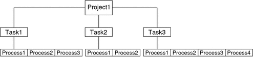

Previous
Previous
Projects and Tasks
The chapter discusses the workload hierarchy and provides information about projects and tasks. The following topics are covered:
Overview of Projects and Tasks
The Solaris Operating System uses the workload hierarchy to organize the work being performed on the system. A task is a collection of processes that represents a workload component. A project is a collection of tasks that represents an entire workload. At any given time, a process can be a component of only one task and one project. The relationships in the workload hierarchy are illustrated in the following figure.
Figure 2-1 Workload HierarchyA user who is a member of more than one project can run processes in multiple projects at the same time. All processes that are started by a process inherit the project and task created by the parent process. When you switch to a new project in a startup script, all child processes run in the new project.
An executing user process has an associated user identity (uid), group identity (gid), and project identity (projid). Process attributes and abilities are inherited from the user, group, and project identities to form the execution context for a task.
For an in-depth discussion of projects and tasks, see Chapter 2, Projects and Tasks (Overview), in System Administration Guide: Solaris Containers-Resource Management and Solaris Zones. For the administration commands for managing projects and tasks, see Chapter 3, Administering Projects and Tasks, in System Administration Guide: Solaris Containers-Resource Management and Solaris Zones.
/etc/project File
The project file is the heart of workload hierarchy. The project database is maintained on a system through the /etc/project file or over the network through a naming service, such as NIS or LDAP.
The /etc/project file contains five standard projects.
- system
This project is used for all system processes and daemons.
- user.root
All root processes spawned by root logins and root cron, at, and batch jobs.
- noproject
This special project is for IPQoS.
- default
A default project is assigned to every user.
- group.staff
This project is used for all users in the group staff.
To access the project file programmatically, use the following structure:
struct project {
char *pj_name; /* name of the project */
projid_t pj_projid; /* numerical project ID */
char *pj_comment; /* project comment */
char **pj_users; /* vector of pointers to project user names */
char **pj_groups; /* vector of pointers to project group names */
char *pj_attr; /* project attributes */
};The project structure members include the following:
- *pj_name
Name of the project.
- pj_projid
Project ID.
- *pj_comment
User-supplied project description.
- **pj_users
Pointers to project user members.
- **pj_groups
Pointers to project group members.
- *pj_attr
Project attributes. Use these attributes to set values for resource controls and project pools.
Resource usage can be controlled through project attributes, or, for zones, configured through the zonecfg command. Four prefixes are used to group the types of resource control attributes:
project.* – This prefix denotes attributes that are used to control projects. For example, project.max-locked-memory indicates the total amount of locked memory allowed, expressed as a number of bytes. The project.pool attribute binds a project to a resource pool. See Chapter 6, Resource Pools.
task.* – This prefix is used for attributes that are applied to tasks. For example, the task.max-cpu-time attribute sets the maximum CPU time that is available to this task's processes, expressed as a number of seconds.
process.* – This prefix is used for process controls. For example, the process.max-file-size control sets the maximum file offset that is available for writing by this process, expressed as a number of bytes.
zone.* – The zone.* prefix indicates a zone-wide resource control applied to projects, tasks, and processes in a zone. For example, zone.max-lwps prevents too many LWPs in one zone from affecting other zones. A zone's total LWPs can be further subdivided among projects within the zone within the zone by using project.max-lwps entries.
For the complete list of resource controls, see resource_controls(5).